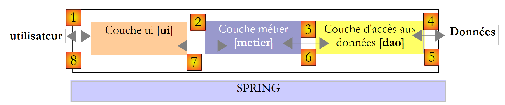
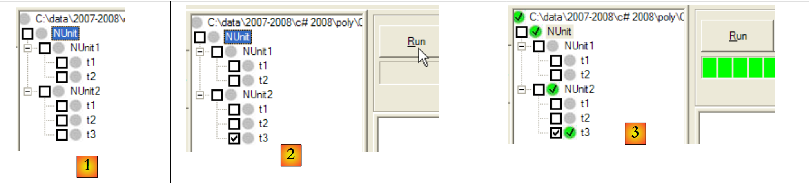
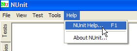
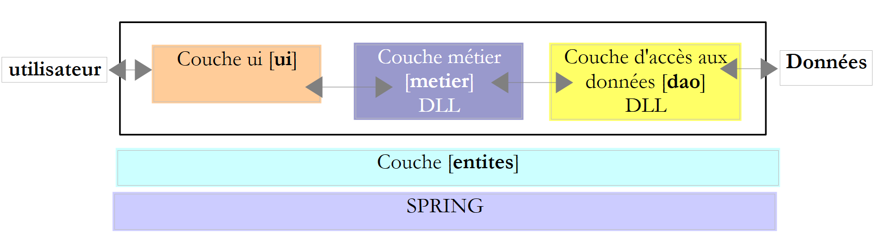
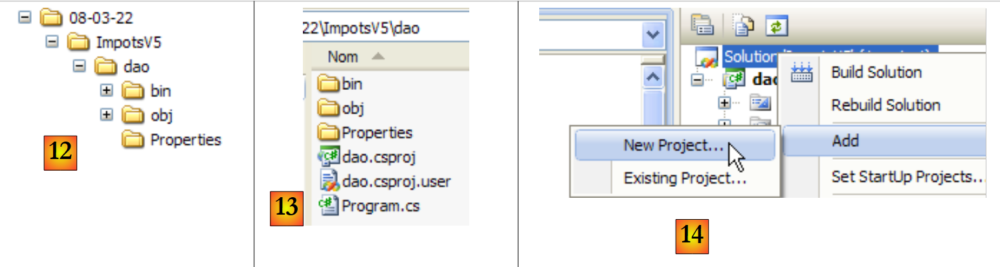
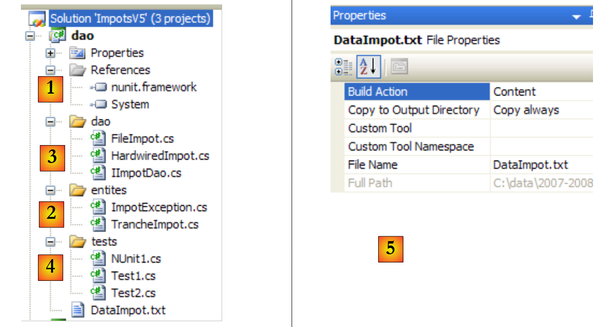
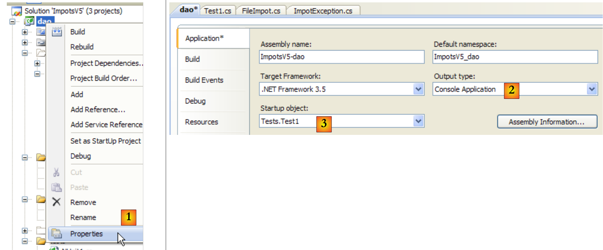
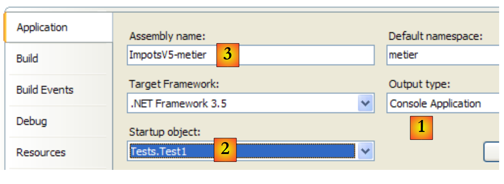
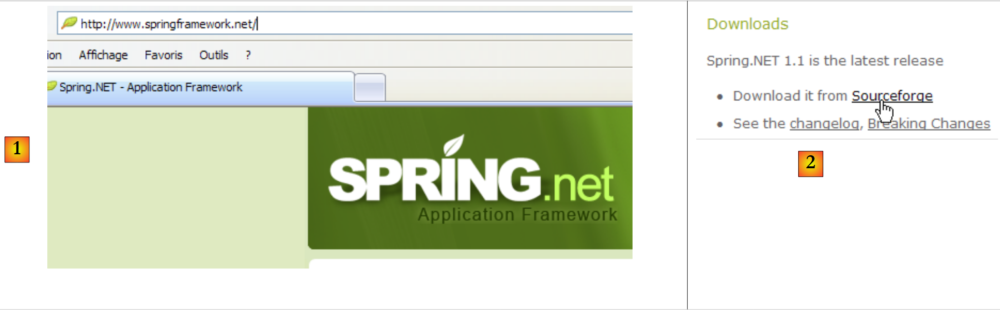

6. بنى ثلاثية الطبقات
6.1. مقدمة
دعونا نلقي نظرة على أحدث إصدار من تطبيق حساب الضرائب:
using System;
namespace Chap3 {
class Program {
static void Main() {
// interactive tax calculator
// the user enters three data points on the keyboard: married nbEnfants salary
// the program then displays Tax payable
...
// creation of a IImpot object
IImpot impot = null;
try {
// creation of a IImpot object
impot = new FileImpot("DataImpotInvalide.txt");
} catch (FileImpotException e) {
// error display
...
// program stop
Environment.Exit(1);
}
// infinite loop
while (true) {
// tax calculation parameters are requested
Console.Write("Paramètres du calcul de l'Impot au format : Marié (o/n) NbEnfants Salaire ou rien pour arrêter :");
string paramètres = Console.ReadLine().Trim();
...
// parameters are correct - Impot is calculated
Console.WriteLine("Impot=" + impot.calculer(marié == "o", nbEnfants, salaire) + " euros");
// next taxpayer
}//while
}
}
}
الحل السابق يتضمن الكلاسيكي :
- استرجاع البيانات المخزنة في الملفات وقواعد البيانات وما إلى ذلك. الأسطر 12-21
- التفاعل مع المستخدم، الأسطر 26 (المدخلات) و29 (العروض)
- استخدام خوارزمية الأعمال، السطر 29
أثبتت التجربة العملية أن عزل هذه العمليات المختلفة في فئات منفصلة يحسن قابلية صيانة التطبيقات. وتكون بنية التطبيق المنظم بهذه الطريقة كما يلي:
 |
تسمى هذه البنية "البنية ثلاثية الطبقات". يشير مصطلح "ثلاثية الطبقات" عادةً إلى بنية يكون فيها كل طبقة على جهاز مختلف. وعندما تكون الطبقات على نفس الجهاز، تصبح البنية "بنية ثلاثية الطبقات".
- تحتوي الطبقة [التجارية] على القواعد التجارية للتطبيق. بالنسبة لتطبيق حساب الضرائب الخاص بنا، هذه هي القواعد المستخدمة لحساب ضريبة دافع الضرائب. تحتاج هذه الطبقة إلى بيانات لتعمل:
- شرائح الضرائب، التي تتغير كل عام
- عدد الأبناء، والحالة الاجتماعية، والراتب السنوي للمكلف
في الرسم البياني أعلاه، يمكن أن تأتي البيانات من مكانين:
- طبقة الوصول إلى البيانات أو [dao] (DAO = كائن الوصول إلى البيانات) للبيانات المخزنة بالفعل في الملفات أو قواعد البيانات. قد يكون هذا هو الحال بالنسبة للشرائح الضريبية هنا، كما كان الحال في الإصدار السابق من التطبيق.
- طبقة واجهة المستخدم أو [ui] (UI = واجهة المستخدم) للبيانات التي يدخلها المستخدم أو التي تُعرض عليه. قد يكون هذا هو الحال هنا بالنسبة لعدد الأطفال والحالة الاجتماعية والراتب السنوي للمكلف
- بشكل عام، تتولى طبقة [dao] الوصول إلى البيانات الدائمة (الملفات وقواعد البيانات) أو البيانات غير الدائمة (الشبكة وأجهزة الاستشعار، إلخ).
- تتولى طبقة [ui] التعامل مع التفاعلات مع المستخدم، إن وجدت.
- تتمتع الطبقات الثلاث بالاستقلالية من خلال استخدام الواجهات.
سنأخذ التطبيق [Impots] الذي درسناه عدة مرات من قبل ونمنحه بنية ثلاثية الطبقات. للقيام بذلك، سندرس الطبقات [ui، metier، dao] واحدة تلو الأخرى، بدءًا من طبقة [dao]، التي تتولى معالجة البيانات الدائمة.
أولاً، نحتاج إلى تعريف واجهات طبقات التطبيق المختلفة [Impots].
6.2. واجهات التطبيق [Impots]
تذكر أن الواجهة تحدد مجموعة من توقيعات الطرق. وتقوم الفئات التي تنفذ الواجهة بتزويد هذه الطرق بالمحتوى.
لنعد إلى بنية التطبيق المكونة من 3 طبقات:
 |
في هذا النوع من البنية، غالبًا ما يكون المستخدم هو من يبادر. فهو يقدم طلبًا في [1] ويتلقى استجابة في [8]. ويُعرف هذا بدورة الطلب والاستجابة. لنأخذ مثال حساب الضريبة على دافع الضرائب. سيتطلب هذا عدة خطوات:
- ستحتاج الطبقة [ui] إلى سؤال المستخدم عن عدد أطفاله وحالته الاجتماعية وراتبه السنوي. هذه هي العملية [1] أعلاه.
- بمجرد الانتهاء من ذلك، ستطلب طبقة [ui] من طبقة الأعمال حساب الضريبة. للقيام بذلك، ستقوم بنقل البيانات التي تلقتها من المستخدم. هذه هي العملية [2].
- تحتاج طبقة [metier] إلى معلومات معينة لأداء عملها: شرائح الضرائب. وستطلب هذه المعلومات من طبقة [dao] عبر المسار [3، 4، 5، 6]. [3] هو الطلب الأولي و[6] هو الرد على هذا الطلب.
- بعد الحصول على جميع البيانات التي تحتاجها، تقوم طبقة [metier] بحساب الضريبة.
- يمكن لطبقة [metier] الآن الرد على الطلب المقدم من طبقة [ui] في (ب). هذا هو المسار [7].
- ستقوم طبقة [ui] بتنسيق هذه النتائج وعرضها على المستخدم. هذا هو المسار [8].
- يمكننا أن نتخيل أن المستخدم يقوم بإجراء محاكاة للضرائب ويريد حفظها. سيستخدم المسار [1-8] للقيام بذلك.
يوضح هذا الوصف أن الطبقة ستستخدم موارد الطبقة الموجودة على يمينها، ولكنها لن تستخدم أبدًا موارد الطبقة الموجودة على يسارها. لنفكر في طبقتين متجاورتين:
 |
الطبقة [A] ترسل طلبات إلى الطبقة [B]. في أبسط الحالات، يتم تنفيذ الطبقة بواسطة فئة واحدة. يتطور التطبيق بمرور الوقت. لذلك قد تحتوي الطبقة [B] على فئات تنفيذ مختلفة [B1، B2، ...]. إذا كانت الطبقة [B] هي الطبقة [dao]، فقد يكون لها تنفيذ أول [B1] يسترد البيانات من ملف. بعد بضع سنوات، قد ترغب في وضع البيانات في قاعدة بيانات. ثم نقوم بإنشاء فئة تنفيذ ثانية [B2]. إذا كانت الطبقة [A] في التطبيق الأولي تعمل مباشرة مع الفئة [B1]، فإننا نضطر إلى إعادة كتابة جزء من كود الطبقة [A]. على سبيل المثال، لنفترض أن الطبقة [A] قد كُتبت على النحو التالي:
- السطر 1: يتم إنشاء مثيل للفئة [B1]
- السطر 3: يتم طلب البيانات من هذه المثيل
إذا افترضنا أن فئة التنفيذ الجديدة [B2] تستخدم طرقًا لها نفس توقيع طرق فئة [B1]، فسيتعين علينا تغيير جميع [B1s] إلى [B2s]. هذه حالة مواتية للغاية، ومن غير المرجح حدوثها إذا لم تكن قد انتبهت إلى توقيعات الطرق هذه. في الممارسة العملية، غالبًا ما لا تحتوي الفئتان [B1] و[B2] على نفس توقيعات الطرق، لذا يتعين إعادة كتابة جزء كبير من الطبقة [A] بالكامل.
يمكن تحسين هذا عن طريق إنشاء واجهة بين الطبقتين [A] و[B]. وهذا يعني تجميد توقيعات الطرق التي تقدمها الطبقة [B] إلى الطبقة [A] في واجهة. يصبح الرسم البياني السابق عندئذ كما يلي:
 |
لم تعد الطبقة [A] تتعامل مع الطبقة [B] مباشرةً، بل مع واجهتها [IB]. وبالتالي، في كود الطبقة [A]، لا تظهر فئة التنفيذ [Bi] الخاصة بالطبقة [B] سوى مرة واحدة، وذلك عند تنفيذ الواجهة [IB]. وبمجرد الانتهاء من ذلك، يتم استخدام واجهة [IB] في الكود، وليس فئة التنفيذ الخاصة بها. ويصبح الكود السابق كما يلي:
- السطر 1: يتم إنشاء مثيل [ib] الذي ينفذ واجهة [IB] عن طريق إنشاء مثيل للفئة [B1]
- السطر 3: يتم طلب البيانات من المثيل [ib]
الآن، إذا استبدلنا تنفيذ [B1] للطبقة [B] بتنفيذ [B2]، وكان كلا التنفيذين يتوافقان مع نفس واجهة [IB]، فإن السطر 1 فقط من الطبقة [A] هو الذي يحتاج إلى تعديل دون غيره. هذه ميزة كبيرة، وهي بحد ذاتها تبرر الاستخدام المنهجي للواجهات بين طبقتين.
يمكننا الذهاب إلى أبعد من ذلك وجعل الطبقة [A] مستقلة تمامًا عن الطبقة [B]. في الكود أعلاه، يمثل السطر 1 مشكلة لأنه يشير إلى فئة [B1]. من الناحية المثالية، يجب أن تحتوي الطبقة [A] على تنفيذ لواجهة [IB] دون الحاجة إلى تسمية فئة. سيكون هذا متسقًا مع الرسم التخطيطي أعلاه. يمكننا أن نرى أن الطبقة [A] تتعامل مع الواجهة [IB]، ولا نرى سببًا يدعوها إلى معرفة اسم الفئة التي تنفذ هذه الواجهة. هذه التفاصيل لا فائدة منها للطبقة [A].
يحقق إطار عمل Spring (http://www.springframework.org) ذلك. تتطور البنية السابقة على النحو التالي:
 |
ستسمح الطبقة العرضية [Spring] لطبقة ما بالحصول على مرجع للطبقة الموجودة على يمينها عن طريق التكوين، دون الحاجة إلى معرفة اسم فئة تنفيذ الطبقة. سيكون هذا الاسم موجودًا في ملفات التكوين وليس في كود C#. ثم يأخذ كود C# للطبقة [A] الشكل التالي:
- السطر 1: مثيل [ib] ينفذ واجهة [IB] للطبقة [B]. يتم إنشاء هذا المثيل بواسطة Spring بناءً على المعلومات الموجودة في ملف التكوين. سيقوم Spring بإنشاء:
- مثيل [b] الذي ينفذ الطبقة [B]
- المثيل [a] الذي ينفذ الطبقة [A]. سيتم تهيئة هذا المثيل. سيتم تعيين الحقل [ib] أعلاه إلى المرجع [b] للكائن الذي ينفذ الطبقة [B]
- السطر 3: يتم طلب البيانات من المثيل [ib]
يمكننا الآن أن نرى أن فئة التنفيذ [B1] للطبقة B لا تظهر في أي مكان في كود الطبقة [A]. عندما يتم استبدال التنفيذ [B1] بتنفيذ جديد [B2]، لن يتغير شيء في كود الفئة [A]. نحن ببساطة نغير ملفات تكوين Spring لإنشاء مثيل [B2] بدلاً من [B1].
يقدم الثنائي Spring وواجهات C# تحسينًا حاسمًا في صيانة التطبيق من خلال جعل طبقات التطبيق محكمة الإغلاق. هذا هو الحل الذي سنستخدمه لإصدار جديد من تطبيق [Impots].
لنعد إلى بنية التطبيق المكونة من ثلاث طبقات:
 |
في الحالات البسيطة، يمكننا البدء من طبقة [الأعمال] لاكتشاف واجهات التطبيق. لكي يعمل، يحتاج إلى:
- متوفرة بالفعل في الملفات أو قواعد البيانات أو عبر الشبكة. يتم توفيرها بواسطة طبقة [dao].
- غير متوفرة بعد. يتم توفيرها من قبل طبقة [ui]، التي تحصل عليها من مستخدم التطبيق.
ما هي الواجهة التي يجب أن توفرها طبقة [dao] لطبقة [metier]؟ ما هي التفاعلات المحتملة بين هاتين الطبقتين؟ يجب أن تزود طبقة [dao] طبقة [metier] بالبيانات التالية:
- شرائح الضرائب
في تطبيقنا، تستخدم طبقة [dao] البيانات الموجودة ولكنها لا تنشئ بيانات جديدة. يمكن أن يكون تعريف واجهة طبقة [dao] كما يلي:
using Entites;
namespace Dao {
public interface IImpotDao {
// tax brackets
TrancheImpot[] TranchesImpot{get;}
}
}
- السطر 3: سيتم وضع الطبقة [dao] في مساحة الاسم [Dao]
- السطر 6: تحدد الواجهة IImpotDao الخاصية TranchesImpot التي ستزود طبقة [business] بشرائح الضرائب.
- السطر 1: يستورد مساحة الاسم التي تم فيها تعريف البنية TrancheImpot :
namespace Entites {
// a tax bracket
public struct TrancheImpot {
public decimal Limite { get; set; }
public decimal CoeffR { get; set; }
public decimal CoeffN { get; set; }
}
}
لنعد إلى بنية التطبيق المكونة من ثلاث طبقات:
 |
ما هي الواجهة التي يجب أن تقدمها طبقة [metier] إلى طبقة [ui]؟ دعونا نستذكر التفاعلات بين هاتين الطبقتين:
- تطلب طبقة [ui] من المستخدم عدد أطفاله وحالته الاجتماعية وراتبه السنوي. هذه هي العملية [1] أعلاه.
- بمجرد الانتهاء من ذلك، ستطلب طبقة [ui] من طبقة الأعمال حساب عدد المقاعد. للقيام بذلك، ستقوم بنقل البيانات التي تلقتها من المستخدم. هذه هي العملية [2].
يمكن أن يكون تعريف واجهة طبقة [metier] كما يلي:
namespace Metier {
interface IImpotMetier {
int CalculerImpot(bool marié, int nbEnfants, int salaire);
}
}
- السطر 1: سنضع كل ما يتعلق بطبقة [metier] في مساحة الاسم [Metier].
- السطر 2: تحدد الواجهة IImpotMetier طريقة واحدة فقط: وهي حساب الالتزام الضريبي للمكلف على أساس الحالة الاجتماعية وعدد الأبناء والراتب السنوي.
ندرس تطبيقًا أوليًا لهذه البنية الطبقية.
6.3. تطبيق نموذجي - الإصدار 4
6.3.1. مشروع Visual Studio
سيكون مشروع Visual Studio كما يلي:
 |
- [1]: يحتوي المجلد [Entites] على كائنات تشمل طبقات [ui، metier، dao]: البنية TrancheImpot، والاستثناء FileImpotException.
- [2]: يحتوي المجلد [Dao] على فئات وواجهات طبقة [dao]. سنستخدم تنفيذين لـ IImpotDao : الفئة HardwiredImpot التي تمت مناقشتها في الفقرة 4.10 و FileImpot التي تمت مناقشتها في الفقرة 5.8.
- [3]: يحتوي المجلد [Metier] على فئات وواجهات لطبقة [metier]
- [4]: يحتوي المجلد [Ui] على فئات طبقة [ui]
- [5]: يحتوي الملف [DataImpot.txt] على الشرائح الضريبية المستخدمة من قبل تطبيق طبقة [dao] FileImpot. تم تكوينه [6] ليتم نسخه تلقائيًا إلى مجلد تنفيذ المشروع.
6.3.2. كيانات التطبيق
لنعد إلى بنية التطبيق المكونة من 3 طبقات:
 |
نسميها «فئات الكيانات عبر الطبقات». وينطبق هذا عمومًا على الفئات والهياكل التي تغلف البيانات الواردة من طبقة [dao]. وعادةً ما تمتد هذه الكيانات حتى طبقة [ui].
كيانات التطبيق هي كما يلي:
البنية TrancheImpot
namespace Entites {
// a tax bracket
public struct TrancheImpot {
public decimal Limite { get; set; }
public decimal CoeffR { get; set; }
public decimal CoeffN { get; set; }
}
}
الاستثناء FileImportException
using System;
namespace Entites {
public class FileImpotException : Exception {
// error codes
[Flags]
public enum CodeErreurs { Acces = 1, Ligne = 2, Champ1 = 4, Champ2 = 8, Champ3 = 16 };
// error code
public CodeErreurs Code { get; set; }
// manufacturers
public FileImpotException() {
}
public FileImpotException(string message)
: base(message) {
}
public FileImpotException(string message, Exception e)
: base(message, e) {
}
}
}
ملاحظة: لا تكون استثناء FileImportException مفيدة إلا إذا تم تنفيذ طبقة [dao] بواسطة FileImport.
6.3.3. طبقة [dao]
 |
تذكر واجهة طبقة [dao]:
using Entites;
namespace Dao {
public interface IImpotDao {
// tax brackets
TrancheImpot[] TranchesImpot{get;}
}
}
سنقوم بتنفيذ هذه الواجهة بطريقتين مختلفتين.
أولاً باستخدام HardwiredImpot الذي تمت مناقشته في الفقرة 4.10 :
using System;
using Entites;
namespace Dao {
public class HardwiredImpot : IImpotDao {
// data tables required to calculate the
decimal[] limites = { 4962M, 8382M, 14753M, 23888M, 38868M, 47932M, 0M };
decimal[] coeffR = { 0M, 0.068M, 0.191M, 0.283M, 0.374M, 0.426M, 0.481M };
decimal[] coeffN = { 0M, 291.09M, 1322.92M, 2668.39M, 4846.98M, 6883.66M, 9505.54M };
// ranges
public TrancheImpot[] TranchesImpot { get; private set; }
// manufacturer
public HardwiredImpot() {
// creation of a table of
TranchesImpot = new TrancheImpot[limites.Length];
// filling
for (int i = 0; i < TranchesImpot.Length; i++) {
TranchesImpot[i] = new TrancheImpot { Limite = limites[i], CoeffR = coeffR[i], CoeffN = coeffN[i] };
}
}
}// class
}// namespace
- السطر 5: الفئة HardwiredImpot تنفذ واجهة IImpotDao
- السطر 12: تنفيذ واجهة TranchesImpot IImpotDao. هذه الخاصية هي خاصية تلقائية. وهي تنفذ خاصية get لواجهة TranchesImpot IImpotDao. كما أعلنا عن طريقة set داخلية للفئة، بحيث يمكن لمُنشئ الأسطر 15-22 تهيئة جدول شرائح الضرائب.
سيتم أيضًا تنفيذ واجهة IImpotDao بواسطة الفئة FileImpot التي تمت مناقشتها في الفقرة 5.8 :
using System;
using System.Collections.Generic;
using System.IO;
using System.Text.RegularExpressions;
using Entites;
namespace Dao {
class FileImpot : IImpotDao {
// data file
public string FileName { get; set; }
// tax brackets
public TrancheImpot[] TranchesImpot { get; private set; }
// manufacturer
public FileImpot(string fileName) {
// save the file name
FileName = fileName;
// data
List<TrancheImpot> listTranchesImpot = new List<TrancheImpot>();
int numLigne = 1;
// exception
FileImpotException fe = null;
// read the contents of the fileName file, line by line
Regex pattern = new Regex(@"s*:\s*");
// initially no error
FileImpotException.CodeErreurs code = 0;
try {
using (StreamReader input = new StreamReader(FileName)) {
while (!input.EndOfStream && code == 0) {
// current line
string ligne = input.ReadLine().Trim();
// ignore empty lines
if (ligne == "")
continue;
// line broken down into three fields separated by :
string[] champsLigne = pattern.Split(ligne);
// do we have 3 fields?
if (champsLigne.Length != 3) {
code = FileImpotException.CodeErreurs.Ligne;
}
// 3-field conversions
decimal limite = 0, coeffR = 0, coeffN = 0;
if (code == 0) {
if (!Decimal.TryParse(champsLigne[0], out limite))
code = FileImpotException.CodeErreurs.Champ1;
if (!Decimal.TryParse(champsLigne[1], out coeffR))
code |= FileImpotException.CodeErreurs.Champ2;
if (!Decimal.TryParse(champsLigne[2], out coeffN))
code |= FileImpotException.CodeErreurs.Champ3;
;
}
// mistake?
if (code != 0) {
// on note l'erreur
fe = new FileImpotException(String.Format("Ligne n° {0} incorrecte", numLigne)) { Code = code };
} else {
// the new tax bracket is memorized
listTranchesImpot.Add(new TrancheImpot() { Limite = limite, CoeffR = coeffR, CoeffN = coeffN });
// next line
numLigne++;
}
}
}
} catch (Exception e) {
// on note l'erreur
fe = new FileImpotException(String.Format("Erreur lors de la lecture du fichier {0}", FileName), e) { Code = FileImpotException.CodeErreurs.Acces };
}
// error to report?
if (fe != null) {
// on lance l'exception
throw fe;
} else {
// return the listImpot list in the tranchesImpot array
TranchesImpot = listTranchesImpot.ToArray();
}
}
}
}
- تمت دراسة هذا الرمز بالفعل في الفقرة 5.8.
- السطر 14: طريقة TranchesImpot واجهة IImpotDao
- السطر 76: تهيئة شرائح الضرائب في منشئ الفئة، من الملف المقدم إلى المنشئ في السطر 17.
6.3.4. الحفاض [metier]
 |
دعونا نستعرض واجهة هذه الطبقة:
namespace Metier {
public interface IImpotMetier {
int CalculerImpot(bool marié, int nbEnfants, int salaire);
}
}
تنفيذ ImpotMetier لهذه الواجهة هو كما يلي:
using Entites;
using Dao;
namespace Metier {
public class ImpotMetier : IImpotMetier {
// layer [dao]
private IImpotDao Dao { get; set; }
// tax brackets
private TrancheImpot[] tranchesImpot;
// manufacturer
public ImpotMetier(IImpotDao dao) {
// memorization
Dao = dao;
// tax brackets
tranchesImpot = dao.TranchesImpot;
}
// tAX CALCULATION
public int CalculerImpot(bool marié, int nbEnfants, int salaire) {
// calculating the number of shares
decimal nbParts;
if (marié)
nbParts = (decimal)nbEnfants / 2 + 2;
else
nbParts = (decimal)nbEnfants / 2 + 1;
if (nbEnfants >= 3)
nbParts += 0.5M;
// calculation of taxable income & family quota
decimal revenu = 0.72M * salaire;
decimal QF = revenu / nbParts;
// tAX CALCULATION
tranchesImpot[tranchesImpot.Length - 1].Limite = QF + 1;
int i = 0;
while (QF > tranchesImpot[i].Limite)
i++;
// return result
return (int)(revenu * tranchesImpot[i].CoeffR - nbParts * tranchesImpot[i].CoeffN);
}//calculate
}//class
}
- السطر 5: تنفذ فئة [Metier] واجهة [IImpotMetier].
- الأسطر 14-19: يجب أن تتعاون طبقة [metier] مع طبقة [dao]. لذلك يجب أن تحتوي على مرجع إلى الكائن الذي ينفذ واجهة IImpotDao. ولهذا السبب يتم تمرير هذا المرجع كمعلمة إلى المنشئ.
- السطر 16: يتم تخزين مرجع الطبقة [dao] في الحقل الخاص في السطر 8
- السطر 18: من هذه الإشارة، يطلب المنشئ جدول شرائح الضرائب ويخزن إشارة في الخاصية الخاصة في السطر 8.
- الأسطر 22-41: تنفيذ طريقة CalculerImpot لواجهة IImpotMetier. يستخدم هذا التنفيذ جدول شرائح الضرائب الذي تم تهيئته بواسطة المنشئ.
6.3.5. طبقة [ui]
 |
كانت فئات حوار المستخدم في الإصدارين 2 و 3 متشابهة جدًا. وكانت فئة الإصدار 2 كما يلي:
using System;
namespace Chap2 {
public class Program {
static void Main() {
...
// creation of
IImpot impot = new HardwiredImpot();
// infinite loop
while (true) {
...
}//while
}
}
}
والإصدار 3:
using System;
namespace Chap3 {
public class Program {
static void Main() {
...
// creation of a IImpot object
IImpot impot = null;
try {
// creation of a IImpot object
impot = new FileImpot("DataImpotInvalide.txt");
} catch (FileImpotException e) {
// error display
string msg = e.InnerException == null ? null : String.Format(", Exception d'origine : {0}", e.InnerException.Message);
Console.WriteLine("L'erreur suivante s'est produite : [Code={0},Message={1}{2}]", e.Code, e.Message, msg == null ? "" : msg);
// program stop
Environment.Exit(1);
}
// infinite loop
while (true) {
...
}//while
}
}
}
الشيء الوحيد الذي يتغير هو طريقة إنشاء مثيل واجهة IImpot المستخدمة لحساب الضريبة. ويتوافق هذا الكائن هنا مع طبقة [الأعمال] لدينا.
بالنسبة لتنفيذ [dao] باستخدام فئة HardwiredImpot، تكون فئة الحوار كما يلي:
using System;
using Metier;
using Dao;
using Entites;
namespace Ui {
public class Dialogue2 {
static void Main() {
...
// we create the layers [metier and dao]
IImpotMetier metier = new ImpotMetier(new HardwiredImpot());
// infinite loop
while (true) {
...
// the parameters are correct - the
Console.WriteLine("Impot=" + metier.CalculerImpot(marié == "o", nbEnfants, salaire) + " euros");
// next taxpayer
}//while
}
}
}
- السطر 12: إنشاء مثيلات للطبقات [dao] و [metier]. تذكر أن الطبقة [metier] تتطلب الطبقة [dao].
- السطر 18: استخدام طبقة [metier] لحساب الضريبة
بالنسبة لتنفيذ [dao] باستخدام فئة FileImport، تكون فئة الحوار كما يلي:
using System;
using Metier;
using Dao;
using Entites;
namespace Ui {
public class Dialogue {
static void Main() {
...
// we create the layers [metier and dao]
IImpotMetier metier = null;
try {
// layer creation [job]
metier = new ImpotMetier(new FileImpot("DataImpot.txt"));
} catch (FileImpotException e) {
// error display
string msg = e.InnerException == null ? null : String.Format(", Exception d'origine : {0}", e.InnerException.Message);
Console.WriteLine("L'erreur suivante s'est produite : [Code={0},Message={1}{2}]", e.Code, e.Message, msg == null ? "" : msg);
// program stop
Environment.Exit(1);
}
// infinite loop
while (true) {
...
// parameters are correct - Impot is calculated
Console.WriteLine("Impot=" + metier.CalculerImpot(marié == "o", nbEnfants, salaire) + " euros");
// next taxpayer
}//while
}
}
}
- السطر 11-21: إنشاء مثيلات للطبقات [dao] و [metier]. قد يؤدي إنشاء مثيل لطبقة [dao] إلى إثارة استثناء، يتم التعامل معه بواسطة
- السطر 26: استخدام طبقة [metier] لحساب الضريبة، كما في الإصدار السابق
6.3.6. الخلاصة
أضفت البنية الطبقية واستخدام الواجهات مرونة معينة على تطبيقنا. ويتجلى ذلك بشكل خاص في الطريقة التي تقوم بها طبقة [ui] بإنشاء مثيلات لطبقتي [dao] و[business]:
// on crée les couches [metier et dao]
IImpotMetier metier = new ImpotMetier(new HardwiredImpot());
في حالة واحدة و:
// we create the layers [metier and dao]
IImpotMetier metier = null;
try {
// layer creation [job]
metier = new ImpotMetier(new FileImpot("DataImpot.txt"));
} catch (FileImpotException e) {
// error display
string msg = e.InnerException == null ? null : String.Format(", Exception d'origine : {0}", e.InnerException.Message);
Console.WriteLine("L'erreur suivante s'est produite : [Code={0},Message={1}{2}]", e.Code, e.Message, msg == null ? "" : msg);
// program stop
Environment.Exit(1);
}
في الآخر. باستثناء معالجة الاستثناءات في الحالة 2، فإن إنشاء مثيلات طبقات [dao] و[metier] متشابه في كلا التطبيقين. بمجرد إنشاء مثيلات طبقات [dao] و[metier]، يكون كود طبقة [ui] متطابقًا في كلتا الحالتين. ويرجع ذلك إلى حقيقة أن طبقة [metier] يتم التعامل معها عبر واجهتها IImpotMetier وليس عبر فئة التنفيذ الخاصة بها. إن تغيير طبقة [metier] أو طبقة [dao] في التطبيق دون تغيير واجهاتهما يعني دائمًا تغيير الأسطر السابقة في طبقة [ui] فقط.
مثال آخر على المرونة التي توفرها هذه البنية هو تنفيذ طبقة [business]:
using Entites;
using Dao;
namespace Metier {
public class ImpotMetier : IImpotMetier {
// layer [dao]
private IImpotDao Dao { get; set; }
// tax brackets
private TrancheImpot[] tranchesImpot;
// manufacturer
public ImpotMetier(IImpotDao dao) {
// memorization
Dao = dao;
// tax brackets
tranchesImpot = dao.TranchesImpot;
}
// tAX CALCULATION
public int CalculerImpot(bool marié, int nbEnfants, int salaire) {
...
}//calculate
}//class
}
يُظهر السطر 14 أن طبقة [business] مبنية من مرجع إلى واجهة طبقة [dao]. وبالتالي، فإن تغيير تنفيذ هذه الأخيرة لا يؤثر مطلقًا على طبقة [business]. وهذا هو السبب في أن تنفيذنا الوحيد لطبقة [business] كان قادرًا على العمل دون تغيير مع تنفيذين مختلفين لطبقة [dao].
6.4. مثال على التطبيق - الإصدار 5 من
 |
يعتمد هذا الإصدار الجديد على الإصدار السابق ويتضمن التغييرات التالية:
- يتم تغليف كل من طبقتي [business] و [dao] في مكتبة DLL ويتم اختبارهما باستخدام إطار عمل اختبار الوحدات NUnit.
- يتم توفير تكامل الطبقات بواسطة إطار عمل Spring
في المشاريع الكبيرة، يعمل العديد من المطورين على نفس المشروع. تسهل البنى الطبقية طريقة العمل هذه: نظرًا لأن الطبقات تتواصل مع بعضها البعض عبر واجهات محددة جيدًا، لا يتعين على المطور الذي يعمل على طبقة واحدة أن يقلق بشأن عمل المطورين الآخرين على الطبقات الأخرى. كل ما هو مطلوب هو أن يحترم الجميع الواجهات.
في المثال أعلاه، سيحتاج مطور طبقة [business] إلى تنفيذ لطبقة [dao] عند اختبار طبقته. إلى أن يتم الانتهاء من ذلك، يمكنه استخدام تنفيذ وهمي لطبقة [dao]، طالما أنه يتوافق مع واجهة [dao] IImpotDao. هذه ميزة أخرى للهندسة الطبقية: لا يمنع التأخير في طبقة [dao] اختبار طبقة [business]. كما أن التنفيذ الوهمي لطبقة [dao] يتميز بأنه غالبًا ما يكون أسهل في التنفيذ من طبقة [dao] الحقيقية، التي قد تتطلب تشغيل SGBD واتصالات شبكة، ...
عند اكتمال طبقة [dao] واختبارها، سيتم تسليمها إلى مطوري طبقة [business] في شكل مكتبة DLL بدلاً من شفرة المصدر. في النهاية، غالبًا ما يتم تسليم التطبيق في شكل ملف .exe قابل للتنفيذ (لطبقة [ui]) ومكتبات فئات .dll (للطبقات الأخرى).
6.4.1. NUnit
حتى الآن، كانت الاختبارات التي أجريت على تطبيقاتنا المختلفة تعتمد على التحقق البصري. كنا نتحقق من أننا نحصل على ما هو متوقع على الشاشة. هذه الطريقة غير قابلة للاستخدام عندما يكون هناك العديد من الاختبارات التي يجب إجراؤها. البشر عرضة للإرهاق، وقدرتهم على التحقق من الاختبارات تتضاءل مع مرور اليوم. لذلك يجب أتمتة الاختبارات، والسعي إلى عدم تدخل الإنسان مطلقًا.
يتطور التطبيق بمرور الوقت. وفي كل مرة يتطور فيها، نحتاج إلى التحقق من أن التطبيق لا "يتراجع"، أي أنه يستمر في اجتياز الاختبارات الوظيفية التي تم إجراؤها عند كتابته لأول مرة. وتسمى هذه الاختبارات "اختبارات عدم التراجع". وقد يتطلب التطبيق الكبير إجراء مئات الاختبارات. يتم اختبار كل طريقة في كل فئة في التطبيق. وتسمى هذه الاختبارات اختبارات الوحدة. وقد يتطلب ذلك مشاركة العديد من المطورين إذا لم تكن هذه الاختبارات آلية.
تم تطوير أدوات لأتمتة الاختبار. إحدى هذه الأدوات تسمى NUnit. وهي متوفرة على [http://www.nunit.org] :
 |  |
تم استخدام الإصدار 2.4.6 أعلاه في هذا المستند (مارس 2008). يؤدي التثبيت إلى وضع رمز [1] على سطح المكتب:
 |
يؤدي النقر المزدوج على الرمز [1] إلى تشغيل واجهة المستخدم الرسومية لـ NUnit [2]. ولا يساعد هذا في أتمتة الاختبار، حيث نعود مرة أخرى إلى التحقق البصري: يقوم المختبر بمراجعة نتائج الاختبار المعروضة في واجهة المستخدم الرسومية. ومع ذلك، يمكن أيضًا تشغيل الاختبارات باستخدام أدوات التشغيل الدفعي وحفظ نتائجها في ملفات XML. وهذه هي الطريقة التي تتبعها فرق التطوير: حيث يتم تشغيل الاختبارات ليلاً، ويحصل المطورون على النتائج في صباح اليوم التالي.
دعونا نلقي نظرة على مثال لاختبار NUnit. أولاً، لنقم بإنشاء مشروع C# جديد من نوع Application Console :
 |
في [1]، نرى مراجع المشروع. هذه المراجع هي مكتبات DLL تحتوي على الفئات والواجهات التي يستخدمها المشروع. تلك المعروضة في [1] مضمنة بشكل افتراضي في كل مشروع C# جديد. لكي نتمكن من استخدام فئات وواجهات إطار عمل NUnit، نحتاج إلى إضافة [2] مرجع جديد إلى المشروع.
 |
في علامة التبويب .NET أعلاه، نختار المكون [nunit.framework]. المكونات [nunit.*] أعلاه ليست مكونات موجودة بشكل افتراضي في بيئة .NET. تم إضافتها إلى هناك بواسطة التثبيت السابق لإطار عمل NUnit. بمجرد إضافة المرجع، يظهر [4] في قائمة مراجع المشروع.
قبل إنشاء التطبيق، يكون مجلد [bin/Release] الخاص بالمشروع فارغًا. بعد الإنشاء (F6)، لم يعد مجلد [bin/Release] فارغًا:
 |
في [6]، نرى وجود ملف DLL [nunit.framework.dll]. كانت إضافة المرجع [nunit.framework] هي التي تسببت في نسخ ملف DLL هذا إلى مجلد التنفيذ. هذا في الواقع أحد المجلدات التي سيستكشفها CLR (Common Language Runtime) .NET للعثور على الفئات والواجهات التي يشير إليها المشروع.
لنقم بإنشاء أول فئة اختبار NUnit. للقيام بذلك، نقوم بحذف الفئة الافتراضية [Program.cs] وإضافة فئة جديدة [Nunit1.cs] إلى المشروع. كما نقوم بحذف المراجع غير الضرورية [7].
ستكون فئة الاختبار NUnit1 كما يلي:
using System;
using NUnit.Framework;
namespace NUnit {
[TestFixture]
public class NUnit1 {
public NUnit1() {
Console.WriteLine("constructeur");
}
[SetUp]
public void avant() {
Console.WriteLine("Setup");
}
[TearDown]
public void après() {
Console.WriteLine("TearDown");
}
[Test]
public void t1() {
Console.WriteLine("test1");
Assert.AreEqual(1, 1);
}
[Test]
public void t2() {
Console.WriteLine("test2");
Assert.AreEqual(1, 2, "1 n'est pas égal à 2");
}
}
}
- السطر 6: يجب أن تكون الفئة NUnit1 عامة. لا يقوم Visual Studio بإنشاء الكلمة الرئيسية public بشكل افتراضي. يجب إضافتها.
- السطر 5: [TestFixture] هي سمة NUnit. وهي تشير إلى أن الفئة هي فئة اختبار.
- الأسطر 7-9: المنشئ. يتم استخدامه هنا فقط لكتابة رسالة على الشاشة. نريد أن نرى متى يتم تنفيذه.
- السطر 10: يحدد [SetUp] طريقة يتم تنفيذها قبل كل اختبار وحدة.
- السطر 14: [TearDown] يحدد طريقة يتم تنفيذها بعد كل اختبار وحدة.
- السطر 18: السمة [Testattribute ] تحدد طريقة اختبار. لكل طريقة مرفقة بـ [Test]، سيتم تنفيذ [SetUp] المرفقة قبل الاختبار، وسيتم تنفيذ [TearDown] بعد الاختبار.
- السطر 21: أحد [Assert.*] المحددة بواسطة إطار عمل NUnit. تتوفر طرق [Assert] التالية:
- [Assert.AreEqual(expression1, expression2)] : يتحقق من أن قيم التعبيرين متساوية. يتم دعم العديد من أنواع التعبيرات (int، string، float، double، decimal، ...). إذا لم يكن التعبيران متساويين، يتم إلقاء استثناء.
- [Assert.AreEqual(real1, real2, delta)] : يتحقق من أن رقمين حقيقيين متساويان تقريبًا بقيمة delta، أي abs(real1-real2)<=delta. على سبيل المثال، يمكننا كتابة [Assert.AreEqual(real1, real2, 1E-6)] للتحقق من أن القيمتين متساويتان تقريبًا بقيمة 10-6.
- [Assert.AreEqual(expression1, expression2, message)] و [Assert.AreEqual(real1, real2, delta, message)] هما متغيران يستخدمان لتحديد رسالة الخطأ المرتبطة بالاستثناء الذي يتم إلقائه عند فشل [Assert.AreEqual].
- [Assert.IsNotNull(object)] و [Assert.IsNotNull(object, message)] : يتحقق من أن الكائن لا يساوي null.
- [Assert.IsNull(object)] و [Assert.IsNull(object, message)] : يتحقق من أن الكائن يساوي null.
- [Assert.IsTrue(expression)] و [Assert.IsTrue(expression, message)]: يتحقق من أن التعبير يساوي true.
- [Assert.IsFalse(expression)] و [Assert.IsFalse(expression, message)] : يتحقق من أن التعبير يساوي false.
- [Assert.AreSame(object1, object2)] و [Assert.AreSame(object1, object2, message)] : يتحقق من أن المراجع object1 و object2 تشير إلى نفس الكائن.
- [Assert.AreNotSame(object1, object2)] و [Assert.AreNotSame(object1, object2, message)] : يتحقق من أن المراجع object1 و object2 لا تشيران إلى نفس الكائن.
- السطر 21: يجب أن تنجح عملية التأكيد
- السطر 26: يجب أن تفشل عملية التحقق
دعونا نُهيئ المشروع بحيث ينتج عنه ملف DLL بدلاً من ملف .exe قابل للتنفيذ:
 |
- في [1]: خصائص المشروع
- في [2، 3]: حدد [مكتبة الفئات] كنوع المشروع
- في [4]: سيؤدي إنشاء المشروع إلى إنتاج ملف DLL (تجميع) يسمى [Nunit.dll]
الآن دعونا نستخدم NUnit لتنفيذ فئة الاختبار:
 |
- في [1]: افتح مشروع NUnit
- في [2، 3]: قم بتحميل ملف DLL bin/Release/Nunit.dll الذي تم إنشاؤه بواسطة مشروع C#
- في [4]: تم تحميل ملف DLL
- في [5]: شجرة الاختبار
- في [6]: يتم تنفيذها
 |
- في [7]: النتائج: نجح t1، وفشل t2
- في [8]: يشير الشريط الأحمر إلى فشل عام لفئة الاختبار
- في [9]: رسالة خطأ الاختبار الفاشل
 |
- في [11]: علامات التبويب المختلفة في نافذة النتائج
- في [12]: علامة التبويب [Console.Out]. هنا نرى أن:
- لم يتم تشغيل المنشئ سوى مرة واحدة
- تم تنفيذ طريقة [SetUp] قبل كل من الاختبارين
- تم تنفيذ طريقة [TearDown] بعد كل من الاختبارين
يمكنك تحديد الطرق المراد اختبارها:
 |
- في [1]: يتم عرض مربع اختيار بجوار كل اختبار
- في [2]: حدد الاختبارات المراد تشغيلها
- في [3]: يتم تنفيذها
لتصحيح الأخطاء، ما عليك سوى تصحيح مشروع C# وإعادة إنشائه. يكتشف NUnit أن ملف DLL الذي يختبره قد تم تغييره ويقوم تلقائيًا بتحميل الملف الجديد. كل ما عليك فعله هو إعادة تشغيل الاختبارات.
ضع في اعتبارك فئة الاختبار الجديدة التالية:
using System;
using NUnit.Framework;
namespace NUnit {
[TestFixture]
public class NUnit2 : AssertionHelper {
public NUnit2() {
Console.WriteLine("constructeur");
}
[SetUp]
public void avant() {
Console.WriteLine("Setup");
}
[TearDown]
public void après() {
Console.WriteLine("TearDown");
}
[Test]
public void t1() {
Console.WriteLine("test1");
Expect(1, EqualTo(1));
}
[Test]
public void t2() {
Console.WriteLine("test2");
Expect(1, EqualTo(2), "1 n'est pas égal à 2");
}
}
}
بدءًا من الإصدار 2.4 من NUnit، أصبحت صيغة جديدة متاحة، وهي تلك الموجودة في السطرين 21 و26. ولهذا، يجب أن تكون فئة الاختبار مشتقة من AssertionHelper (السطر 6).
فيما يلي التوافق (غير الشامل) بين الصيغة القديمة والجديدة:
دعونا نضيف الاختبار التالي إلى فئة NUnit2:
[Test]
public void t3() {
bool vrai = true, faux = false;
Expect(vrai, True);
Expect(faux, False);
Object obj1 = new Object(), obj2 = null, obj3=obj1;
Expect(obj1, Not.Null);
Expect(obj2, Null);
Expect(obj3, SameAs(obj1));
double d1 = 4.1, d2 = 6.4, d3 = d1;
Expect(d1, EqualTo(d3).Within(1e-6));
Expect(d1, Not.EqualTo(d2));
}
إذا قمنا بإنشاء (F6) مكتبة DLL الجديدة لمشروع C#، يصبح مشروع NUnit كما يلي:
 |
- في [1]: تم الكشف تلقائيًا عن فئة الاختبار الجديدة [NUnit2]
- في [2]: تشغيل اختبار t3 لـ NUnit2
- في [3]: اجتاز اختبار t3
لمعرفة المزيد عن NUnit، اقرأ دليل المساعدة الخاص بـ NUnit :
 |  |
6.4.2. حل Visual Studio
 |
سنقوم تدريجياً بإنشاء حل Visual Studio التالي:
 |
- في [1]: يتكون الحل ImpotsV5 من ثلاثة مشاريع، واحد لكل طبقة من الطبقات الثلاث للتطبيق
- في [2]: مشروع [dao] من الطبقة [dao]
- في [3]: مشروع [metier] للطبقة [metier]
- في [4]: مشروع [ui] من الطبقة [ui]
يمكن بناء الحل ImpotsV5 على النحو التالي:
1  | 234  | 5  |
- en [1]: إنشاء مشروع جديد
- en [2]: حدد تطبيق وحدة التحكم
- in [3]: تسمية المشروع [dao]
- in [4]: إنشاء المشروع
- in [5]: بمجرد إنشاء المشروع، احفظه
 |
- في [6]: احتفظ باسم [dao] للمشروع
- في [7]: حدد مجلدًا لحفظ المشروع وحله
- في [8]: قم بتسمية الحل
- في [9]: حدد أن الحل يجب أن يكون له ملف خاص به
- في [10]: احفظ المشروع وحله
- في [11]: مشروع [dao] في حله ImpotsV5
 |
- في [12]: ملف الحل ImpotsV5. يحتوي على المجلد [dao] من المجلد [dao].
- في [13]: محتويات المجلد [dao]
- في [14]: تمت إضافة مشروع جديد إلى الحل ImpotsV5
 |
- في [15]: يُسمى المشروع الجديد [metier]
- في [16]: الحل مع مشروعيه
- في [17]: الحل، بعد إضافة المشروع الثالث [ui]
 |
- في [18]: ملف الحل وملفات المشاريع الثلاثة
- عند تنفيذ الحل باستخدام (Ctrl+F5)، يتم تنفيذ المشروع النشط. وينطبق الأمر نفسه عند إنشاء (F6) الحل. يظهر اسم المشروع النشط بخط عريض [19] في الحل.
- في [20]: لتغيير المشروع النشط في الحل
- في [21]: أصبح مشروع [metier] الآن هو المشروع النشط في الحل
6.4.3. [الطبقة dao]
 |
 |
مراجع المشروع (انظر [1] في المشروع)
نضيف مرجع [nunit.framework] المطلوب لاختبارات [NUnit]
الكيانات (انظر [2] في المشروع)
فئة [TrancheImpot] هي نفسها الموجودة في الإصدارات السابقة. تم تغيير اسم فئة [FileImpotException] من الإصدار السابق إلى [ImpotException] لجعلها أكثر عمومية وعدم ربطها بطبقة [dao] معينة:
using System;
namespace Entites {
public class ImpotException : Exception {
// error code
public int Code { get; set; }
// manufacturers
public ImpotException() {
}
public ImpotException(string message)
: base(message) {
}
public ImpotException(string message, Exception e)
: base(message, e) {
}
}
}
طبقة [dao] (انظر [3] في المشروع)
واجهة [IImpotDao] هي نفسها كما في الإصدار السابق. وينطبق الأمر نفسه على فئة [HardwiredImpot]. تم تعديل فئة [FileImpot] لتأخذ في الاعتبار تغيير الاستثناء [FileImpotException] إلى [ImpotException]:
...
namespace Dao {
public class FileImpot : IImpotDao {
// error codes
[Flags]
public enum CodeErreurs { Acces = 1, Ligne = 2, Champ1 = 4, Champ2 = 8, Champ3 = 16 };
...
// manufacturer
public FileImpot(string fileName) {
// save the file name
FileName = fileName;
...
// initially no error
CodeErreurs code = 0;
try {
using (StreamReader input = new StreamReader(FileName)) {
while (!input.EndOfStream && code == 0) {
...
// mistake?
if (code != 0) {
// on note l'erreur
fe = new ImpotException(String.Format("Ligne n° {0} incorrecte", numLigne)) { Code = (int)code };
} else {
...
}
}
}
} catch (Exception e) {
// on note l'erreur
fe = new ImpotException(String.Format("Erreur lors de la lecture du fichier {0}", FileName), e) { Code = (int)CodeErreurs.Acces };
}
// error to report?
...
}
}
}
- السطر 8: تم نقل رموز الأخطاء التي كانت موجودة سابقًا في الفئة [FileImpotException] إلى الفئة [FileImpot]. هذه رموز أخطاء خاصة بهذا التنفيذ لواجهة [IImpotDao].
- السطران 26 و 34: لتغليف خطأ، يتم استخدام الفئة [ImpotException] بدلاً من الفئة [FileImpotException].
اختبار [Test1] (انظر [4] في المشروع)
تعرض فئة [Test1] ببساطة شرائح الضرائب على الشاشة:
using System;
using Dao;
using Entites;
namespace Tests {
class Test1 {
static void Main() {
// create the [dao] layer
IImpotDao dao = null;
try {
// layer creation [dao]
dao = new FileImpot("DataImpot.txt");
} catch (ImpotException e) {
// error display
string msg = e.InnerException == null ? null : String.Format(", Exception d'origine : {0}", e.InnerException.Message);
Console.WriteLine("L'erreur suivante s'est produite : [Code={0},Message={1}{2}]", e.Code, e.Message, msg == null ? "" : msg);
// program stop
Environment.Exit(1);
}
// display tax brackets
TrancheImpot[] tranchesImpot = dao.TranchesImpot;
foreach (TrancheImpot t in tranchesImpot) {
Console.WriteLine("{0}:{1}:{2}", t.Limite, t.CoeffR, t.CoeffN);
}
}
}
}
- السطر 13: يتم تنفيذ الطبقة [dao] بواسطة الفئة [FileImpot]
- السطر 14: يعالج استثناء [ImpotException] الذي قد يحدث.
يتم نسخ ملف [DataImpot.txt] المطلوب للاختبار تلقائيًا إلى مجلد تنفيذ المشروع (انظر [5] في المشروع). سيحتوي مشروع [dao] على عدة فئات تحتوي على طريقة [Main]. في هذه الحالة، يجب أن تشير صراحةً إلى الفئة المراد تنفيذها عندما يطلب المستخدم تنفيذ المشروع بالضغط على Ctrl-F5 :
 |
- en [1]: الوصول إلى خصائص المشروع
- en [2]: تحديد أن هذا تطبيق وحدة التحكم
- في [3]: حدد الفئة المراد تنفيذها
يؤدي تنفيذ الفئة [Test1] السابقة إلى النتائج التالية:
4962:0:0
8382:0,068:291,09
14753:0,191:1322,92
23888:0,283:2668,39
38868:0,374:4846,98
47932:0,426:6883,66
0:0,481:9505,54
اختبار [Test2] (انظر [4] في المشروع)
تقوم فئة [Test2] بنفس ما تقوم به فئة [Test1]، حيث تنفذ طبقة [dao] باستخدام فئة [HardwiredImpot]. يتم استبدال السطر 13 من [Test1] بما يلي:
dao = new HardwiredImpot();
تم تعديل المشروع لتشغيل فئة [Test2]:
 |
نتائج الشاشة هي نفسها كما كانت من قبل.
اختبار NUnit [NUnit1] (انظر [4] في المشروع)
اختبار الوحدة [NUnit1] هو كما يلي:
using System;
using Dao;
using Entites;
using NUnit.Framework;
namespace Tests {
[TestFixture]
public class NUnit1 : AssertionHelper{
// layer [dao] to be tested
private IImpotDao dao;
// manufacturer
public NUnit1() {
// dao] layer initialization
dao = new FileImpot("DataImpot.txt");
}
// test
[Test]
public void ShowTranchesImpot(){
// display tax brackets
TrancheImpot[] tranchesImpot = dao.TranchesImpot;
foreach (TrancheImpot t in tranchesImpot) {
Console.WriteLine("{0}:{1}:{2}", t.Limite, t.CoeffR, t.CoeffN);
}
// some tests
Expect(tranchesImpot.Length,EqualTo(7));
Expect(tranchesImpot[2].Limite,EqualTo(14753));
Expect(tranchesImpot[2].CoeffR, EqualTo(0.191));
Expect(tranchesImpot[2].CoeffN, EqualTo(1322.92));
}
}
}
- تستمد فئة الاختبار من فئة [AssertionHelper]، مما يتيح استخدام الطريقة الثابتة Expect (الأسطر 27-30).
- السطر 10: إشارة إلى طبقة [dao]
- الأسطر 13-16: يقوم المنشئ بإنشاء مثيل لطبقة [dao] باستخدام فئة [FileImpot]
- السطور 19-20: طريقة الاختبار
- السطر 22: يسترد جدول الشرائح الضريبية من طبقة [dao]
- الأسطر 23-25: يتم عرضها كما في السابق. لن يكون هذا العرض ضروريًا في اختبار الوحدة الفعلي. هنا، لهذا العرض غرض تعليمي.
- السطر 27: تأكد من وجود 7 شرائح ضريبية
- السطور 28-30: تحقق من القيم الخاصة بالشريحة الضريبية رقم 2
لتشغيل اختبار الوحدة هذا، يجب أن يكون المشروع من النوع [مكتبة الفئات] :
 |
- في [1]: تم تغيير طبيعة المشروع
- في [2]: سيتم تسمية ملف DLL الذي تم إنشاؤه [ ImpotsV5-dao.dll]
- في [3]: بعد إنشاء (F6) المشروع، يحتوي المجلد [dao/bin/Release] على ملف DLL [ImpotsV5-dao.dll]
ثم يتم تحميل ملف DLL [ImpotsV5-dao.dll] في إطار عمل NUnit وتنفيذه:
 |
- في [1]: اجتازت الاختبارات. نعتبر الآن طبقة [dao] جاهزة للعمل. تحتوي مكتبة DLL الخاصة بها على جميع فئات المشروع، بما في ذلك فئات الاختبار. لم تعد هناك حاجة لهذه الفئات. نعيد بناء مكتبة DLL لاستبعاد فئات الاختبار.
- في [2]: تم استبعاد المجلد [tests] من المشروع
- في [3]: المشروع الجديد. يتم إعادة إنشاؤه بالضغط على F6 لإنشاء ملف DLL جديد.
6.4.4. مهمة [ ]
 |
 |
- في [1]، أصبح مشروع [metier] هو المشروع النشط للحل
- في [2]: مراجع المشروع
- في [3]: طبقة [metier]
- في [4]: فئات الاختبار
- في [5]: ملف الشريحة الضريبية [DataImpot.txt] الذي تم تكوينه [6] ليتم نسخه تلقائيًا إلى مجلد تنفيذ المشروع [7]
مراجع المشروع (انظر [2] في المشروع)
كما هو الحال مع مشروع [dao]، نضيف مرجع [nunit.framework] المطلوب لاختبارات [NUnit]. تحتاج طبقة [metier] إلى طبقة [dao]. ولذلك فهي تحتاج إلى مرجع إلى مكتبة DLL لهذه الطبقة. اتبع الخطوات التالية:
 |
- في [1]: تمت إضافة مرجع جديد إلى مراجع المشروع [metier]
- في [2]: حدد علامة التبويب [Browse]
- في [3]: حدد المجلد [dao/bin/Release]
- في [4]: حدد ملف DLL [ImpotsV5-dao.dll] الذي تم إنشاؤه في المشروع [dao]
- في [5]: المرجع الجديد
الحفاض [metier] (انظر [3] في المشروع)
واجهة [IImpotMetier] هي نفسها الموجودة في الإصدار السابق. وينطبق الأمر نفسه على فئة [ImpotMetier].
اختبار [Test1] (انظر [4] في المشروع)
تقوم فئة [Test1] ببساطة بإجراء بعض حسابات الرواتب:
using System;
using Dao;
using Entites;
using Metier;
namespace Tests {
class Test1 {
static void Main() {
// we create the [metier] layer
IImpotMetier metier = null;
try {
// layer creation [job]
metier = new ImpotMetier(new FileImpot("DataImpot.txt"));
} catch (ImpotException e) {
// error display
string msg = e.InnerException == null ? null : String.Format(", Exception d'origine : {0}", e.InnerException.Message);
Console.WriteLine("L'erreur suivante s'est produite : [Code={0},Message={1}{2}]", e.Code, e.Message, msg == null ? "" : msg);
// program stop
Environment.Exit(1);
}
// on calcule qqs impots
Console.WriteLine(String.Format("Impot(true,2,60000)={0} euros", metier.CalculerImpot(true, 2, 60000)));
Console.WriteLine(String.Format("Impot(false,3,60000)={0} euros", metier.CalculerImpot(false, 3, 60000)));
Console.WriteLine(String.Format("Impot(false,3,60000)={0} euros", metier.CalculerImpot(false, 3, 6000)));
Console.WriteLine(String.Format("Impot(false,3,60000)={0} euros", metier.CalculerImpot(false, 3, 600000)));
}
}
}
- السطر 14: إنشاء طبقات [metier] و [dao]. يتم تنفيذ طبقة [dao] باستخدام فئة [FileImpot]
- الأسطر 12-21: معالجة استثناء [ImpotException] المحتمل
- الأسطر 23-26: استدعاءات متكررة للطريقة الوحيدة CalculerImpot في واجهة [IImpotMetier].
يتم تكوين مشروع [metier] على النحو التالي:
 |
- [1]: المشروع عبارة عن تطبيق وحدة تحكم
- [2]: الفئة التي يتم تنفيذها هي [Test1]
- [3]: سيؤدي إنشاء المشروع إلى إنتاج ملف قابل للتنفيذ [ImpotsV5-metier.exe]
فيما يلي نتائج المشروع:
اختبار [NUnit1] (انظر [4] في المشروع)
تكرر فئة الاختبار الوحدوي [NUnit1] الحسابات الأربعة السابقة وتتحقق من النتائج:
using Dao;
using Metier;
using NUnit.Framework;
namespace Tests {
[TestFixture]
public class NUnit1:AssertionHelper {
// layer [metier] to test
private IImpotMetier metier;
// manufacturer
public NUnit1() {
// initialization layer [metier]
metier = new ImpotMetier(new FileImpot("DataImpot.txt"));
}
// test
[Test]
public void CalculsImpot(){
// display tax brackets
Expect(metier.CalculerImpot(true, 2, 60000), EqualTo(4282));
Expect(metier.CalculerImpot(false, 3, 60000), EqualTo(4282));
Expect(metier.CalculerImpot(false, 3, 6000), EqualTo(0));
Expect(metier.CalculerImpot(false, 3, 600000), EqualTo(179275));
}
}
}
- السطر 14: إنشاء طبقات [metier] و [dao]. يتم تنفيذ طبقة [dao] باستخدام فئة [FileImpot]
- الأسطر 21-24: استدعاءات متكررة للطريقة الوحيدة CalculerImpot في واجهة [IImpotMetier] مع التحقق من النتائج.
تم تكوين مشروع [metier] الآن على النحو التالي:
 |
- [1]: المشروع من نوع "مكتبة الفئات"
- [2]: سيؤدي إنشاء المشروع إلى إنتاج ملف DLL [ImpotsV5-metier.dll]
يتم إنشاء المشروع (F6). ثم يتم تحميل ملف DLL [ ImpotsV5-metier.dll الذي تم إنشاؤه في NUnit واختباره:
 |
نجحت الاختبارات المذكورة أعلاه. نعتبر الآن طبقة [metier] جاهزة للعمل. تحتوي مكتبة DLL الخاصة بها على جميع فئات المشروع، بما في ذلك فئات الاختبار. لم تعد هناك حاجة لهذه الفئات. نقوم بإعادة بناء مكتبة DLL لاستبعاد فئات الاختبار.
 |
- في [1]: تم استبعاد مجلد [tests] من المشروع
- في [2]: المشروع الجديد. يتم إعادة إنشاؤه بالضغط على F6 لإنشاء مكتبة DLL جديدة.
6.4.5. طبقة [ui]
 |
 |
- في [1]، أصبح مشروع [ui] هو المشروع النشط للحل
- في [2]: مراجع المشروع
- في [3]: طبقة [ui]
- في [4]: ملف فئة الضرائب [DataImpot.txt]، تم تكوينه [5] ليتم نسخه تلقائيًا إلى مجلد تنفيذ المشروع [6]
مراجع المشروع (انظر [2] في المشروع)
تحتاج طبقة [ui] إلى طبقتي [metier] و[dao] لإجراء حسابات الضرائب الخاصة بها. ولذلك، فهي تحتاج إلى مرجع إلى مكتبة DLL لهاتين الطبقتين. تابع كما هو موضح بالنسبة لطبقة [metier]
الفئة الرئيسية [Dialogue.cs] (انظر [3] في المشروع)
الفئة [Dialogue.cs] هي نفسها الموجودة في الإصدار السابق.
الاختبارات
تم تكوين مشروع [ui] على النحو التالي:
 |
- [1]: المشروع من نوع "وحدة تحكم التطبيق"
- [2]: سيؤدي إنشاء المشروع إلى إنتاج ملف قابل للتنفيذ [ImpotsV5-ui.exe]
- [3]: الفئة المراد تنفيذها
فيما يلي مثال على التنفيذ (Ctrl+F5):
Paramètres du calcul de l'Impot au format : Marié (o/n) NbEnfants Salaire ou rien pour arrêter :o 2 60000
Impot=4282 euros
6.4.6. الطبقة [ Spring]
لنعد إلى الكود في [Dialogue.cs] الذي ينشئ طبقتي [dao] و [metier]:
// on crée les couches [metier et dao]
IImpotMetier metier = null;
try {
// création couche [metier]
metier = new ImpotMetier(new FileImpot("DataImpot.txt"));
} catch (ImpotException e) {
// affichage erreur
...
// arrêt programme
Environment.Exit(1);
}
يُنشئ السطر 5 طبقتي [dao] و[metier]، مع تسمية فئات التنفيذ لكلتا الطبقتين بشكل صريح: FileImpot لطبقة [dao]، وImpotMetier لطبقة [metier]. إذا تم تنفيذ إحدى الطبقتين بفئة جديدة، فسيتم تغيير السطر 5. على سبيل المثال:
metier = new ImpotMetier(new HardwiredImpot());
بصرف النظر عن هذا التغيير، لن يتغير شيء في التطبيق، حيث تتواصل كل طبقة مع الطبقة التالية عبر واجهة. طالما بقيت الواجهة دون تغيير، يبقى التواصل بين الطبقات دون تغيير. يسمح لنا إطار العمل Spring بالارتقاء باستقلالية الطبقات خطوة إلى الأمام، من خلال نقل أسماء الفئات التي تنفذ الطبقات المختلفة إلى ملف تكوين. إن تغيير تنفيذ طبقة ما يعادل تغيير ملف تكوين. ولا يوجد أي تأثير على كود التطبيق.
 |
فيما سبق، ستطلب طبقة [ui] من Spring [0] إنشاء مثيلات لطبقتي [dao] [1] و[metier] [2] وفقًا للمعلومات الواردة في ملف التكوين. ستطلب طبقة [ui] بعد ذلك من Spring [3] مرجعًا لطبقة [metier]:
// we create the layers [metier and dao]
IImpotMetier metier = null;
try {
// spring context
IApplicationContext ctx = ContextRegistry.GetContext();
// a reference is requested on the [metier] layer
metier = (IImpotMetier)ctx.GetObject("metier");
} catch (Exception e1) {
...
}
- السطر 5: إنشاء مثيلات للطبقات [dao] و [metier] بواسطة Spring
- السطر 7: يتم استرداد مرجع إلى طبقة [metier]. لاحظ أن طبقة [ui] حصلت على هذا المرجع دون ذكر اسم الفئة التي تنفذ طبقة [metier].
يوجد إطار عمل Spring في نسختين: Java و .NET. النسخة .NET متاحة على الرابط (مارس 2008) [http://www.springframework.net/]:
 |
- في [1]: موقع [Spring.net]
- في [2]: صفحة التنزيلات
 |
- في [3]: تنزيل Spring 1.1 (مارس 2008)
 |
- en [4]: قم بتنزيل وتثبيت الإصدار .exe
- في [5]: المجلد الذي تم إنشاؤه بواسطة التثبيت
- في [6]: يحتوي المجلد [bin/net/2.0/release] على مكتبة DLL من Spring لمشاريع Visual Studio .NET 2.0 أو أعلى. Spring هو إطار عمل غني. الجانب من Spring الذي سنستخدمه هنا لإدارة تكامل الطبقات في التطبيق يُسمى IoC: انعكاس التحكم أو DI: حقن التبعية. يوفر Spring مكتبات للوصول إلى قاعدة البيانات باستخدام NHibernate، وإنشاء وتشغيل خدمات الويب، وتطبيقات الويب، ...
- ملفات DLL اللازمة لإدارة تكامل الطبقات في التطبيق هي ملفات DLL [7] و[8].
نقوم بتخزين ملفات DLL الثلاثة هذه في مجلد [lib] في مشروعنا:
 |
- [1]: يتم وضع ملفات DLL الثلاثة في مجلد [lib] باستخدام مستكشف Windows
- [2]: في مشروع [ui]، اعرض جميع الملفات
- [3]: أصبح المجلد [ui/lib] مرئيًا الآن. نقوم بتضمينه في
- [4]: المجلد [ui/lib] جزء من المشروع
عملية إنشاء مجلد [lib] ليست ضرورية على الإطلاق. يمكن إنشاء المراجع مباشرة على ملفات DLL الثلاثة الموجودة في مجلد [bin/net/2.0/release] في [Spring.net]. ومع ذلك، من خلال إنشاء مجلد [lib]، يمكن تطوير التطبيق على محطة عمل بدون [Spring.net]، مما يجعله أقل اعتمادًا على بيئة التطوير المتاحة.
نقوم بإضافة مراجع إلى ملفات DLL الثلاثة الجديدة إلى مشروع [ui]:
 |
- [1]: إنشاء مراجع إلى ملفات DLL الثلاثة الموجودة في المجلد [lib] [2]
- [3]: ملفات DLL الثلاثة هي جزء من مراجع المشروع
لنعد إلى نظرة عامة على بنية التطبيق:
 |
في الأعلى، ستطلب طبقة [ui] من Spring [0] إنشاء مثيلات لطبقتي [dao] [1] و[metier] [2] وفقًا للمعلومات الواردة في ملف التكوين. ثم ستطلب طبقة [ui] من Spring [3] مرجعًا لطبقة [metier]. سيؤدي ذلك إلى ظهور الكود التالي في طبقة [ui]:
// we create the layers [metier and dao]
IImpotMetier metier = null;
try {
// spring context
IApplicationContext ctx = ContextRegistry.GetContext();
// a reference is requested on the [metier] layer
metier = (IImpotMetier)ctx.GetObject("metier");
} catch (Exception e1) {
...
}
- السطر 5: إنشاء مثيلات للطبقات [dao] و [metier] بواسطة Spring
- السطر 7: استرداد مرجع على طبقة [metier].
يستخدم السطر [5] أعلاه ملف التكوين [App.config] في مشروع Visual Studio. في مشروع C#، يُستخدم هذا الملف لتكوين التطبيق. وبالتالي، فإن [App.config] ليس مفهومًا خاصًا بـ Spring، بل مفهومًا خاصًا بـ Visual Studio يستفيد منه Spring. يعرف Spring كيفية استخدام ملفات التكوين بخلاف [App.config]. وبالتالي، فإن الحل المقدم هنا ليس الحل الوحيد المتاح.
لنقم بإنشاء ملف [App.config] باستخدام معالج Visual Studio:
 |
- في [1]: أضف عنصرًا جديدًا إلى المشروع
- في [2]: حدد "ملف تكوين التطبيق"
- في [3]: [App.config] هو الاسم الافتراضي لملف التكوين هذا
- في [4]: تمت إضافة الملف [App.config] إلى المشروع
محتويات ملف [App.config] هي كما يلي:
<?xml version="1.0" encoding="utf-8" ?>
<configuration>
</configuration>
[ App.config] هو ملف XML. يتم تضمين تكوين المشروع في علامات <configuration>. التكوين المطلوب لـ Spring هو كما يلي:
<?xml version="1.0" encoding="utf-8" ?>
<configuration>
<configSections>
<sectionGroup name="spring">
<section name="context" type="Spring.Context.Support.ContextHandler, Spring.Core" />
<section name="objects" type="Spring.Context.Support.DefaultSectionHandler, Spring.Core" />
</sectionGroup>
</configSections>
<spring>
<context>
<resource uri="config://spring/objects" />
</context>
<objects xmlns="http://www.springframework.net">
<object name="dao" type="Dao.FileImpot, ImpotsV5-dao">
<constructor-arg index="0" value="DataImpot.txt"/>
</object>
<object name="metier" type="Metier.ImpotMetier, ImpotsV5-metier">
<constructor-arg index="0" ref="dao"/>
</object>
</objects>
</spring>
</configuration>
- الأسطر 11-23: يُسمى القسم المحدد بعلامة <spring> مجموعة أقسام <spring>. يمكنك إنشاء أي عدد تريده من مجموعات الأقسام في [App.config].
- تحتوي مجموعة الأقسام على أقسام: وهذا هو الحال هنا:
- الأسطر 12-14: قسم <spring/context>
- الأسطر 15-22: قسم <spring/objects>
- الأسطر 4-9: تحدد منطقة <configSections> قائمة معالجات مجموعات الأقسام الموجودة في [App.config].
- الأسطر 5-8: تحدد قائمة مديري الأقسام في مجموعة <spring> (name="spring").
- السطر 6: مدير قسم <context> في مجموعة <spring>:
- name : اسم القسم المدار
- type : اسم الفئة التي تدير القسم بالصيغة NomClasse، NomDLL.
- يتم إدارة قسم <context> من مجموعة <spring> بواسطة [Spring.Context.Support.ContextHandler] الذي يمكن العثور عليه في DLL [Spring.Core.dll]
- السطر 7: مدير قسم <objects> في مجموعة <spring>
الأسطر 4-9 هي أسطر قياسية في ملف [App.config] مع Spring. نحن ببساطة ننسخها من مشروع إلى آخر.
- الأسطر 12-14: تحدد قسم <spring/context>.
- السطر 13: تشير علامة <tagresource> إلى موقع الملف الذي يحدد الفئات التي سيقوم Spring بإنشاء مثيلات لها. قد تكون هذه الفئات موجودة في [App.config] كما هو الحال هنا، ولكنها قد تكون أيضًا في ملف تكوين آخر. يُشار إلى موقع هذه الفئات في سمة uri لعلامة <resource>:
- <resource uri="config://spring/objects> يشير إلى أن قائمة الفئات التي سيتم إنشاء مثيل لها موجودة في ملف [App.config] (التكوين:)، في //spring/objects، أي في علامة <objects> التابعة لعلامة <spring>.
- <resource uri="file://spring-config.xml"> تشير إلى أن قائمة الفئات المراد إنشاء مثيل لها موجودة في ملف [spring-config.xml]. يجب وضع هذا الملف في مجلدات وقت التشغيل الخاصة بالمشروع (bin/Release أو bin/Debug). أسهل طريقة هي وضعه، كما تم مع ملف [DataImpot.txt]، في جذر المشروع باستخدام الخاصية [Copy to output directory=always].
السطور 12-14 هي سطور قياسية في ملف [App.config] مع Spring. نقوم ببساطة بنسخها من مشروع إلى آخر.
- الأسطر 15-22: تعريف الفئات المراد إنشاء مثيلات لها. هنا يتم إجراء التكوين المحدد للتطبيق. تحدد علامة <objects> قسم تعريف الفئات المراد إنشاء مثيلات لها.
- الأسطر 16-18: تعريف الفئة المراد إنشاء مثيل لها للطبقة [dao]
- السطر 16: كل كائن يتم إنشاء مثيل له بواسطة Spring يخضع لعلامة <tagobject>. تحتوي هذه العلامة على سمة name وهي اسم الكائن الذي تم إنشاء مثيل له. هكذا يطلب التطبيق من Spring مرجعًا: "أعطني مرجعًا للكائن المسمى dao". يحدد نوع السمة الفئة المراد إنشاء مثيل لها على أنها NomClasse، NomDLL. يحدد السطر 16 كائنًا يسمى dao "مثيل لـ "Dao.FileImpot" الذي يمكن العثور عليه في DLL "ImpotsV5-dao.dll". لاحظ أنه يتم تقديم اسم الفئة الكامل (بما في ذلك مساحة الاسم)، وأن اللاحقة .dll غير محددة في اسم DLL.
يمكن إنشاء مثيل للفئة بطريقتين باستخدام Spring:
- عبر منشئ خاص يتم تمرير المعلمات إليه: يتم ذلك في الأسطر 16-18.
- عبر منشئ افتراضي بدون معلمات. ثم يتم تهيئة الكائن عبر خاصيته العامة: تحتوي علامة <object> بعد ذلك على علامات فرعية <property> لتهيئة هذه الخصائص. ليس لدينا مثال على هذه الحالة هنا.
- (تابع)
- السطر 16: الفئة التي تم إنشاء مثيل لها هي FileImport. ولديها المنشئ التالي:
public FileImpot(string fileName);
يتم تعريف معلمات المنشئ باستخدام <constructor-arg>.
- السطر 17: يحدد المعلمة الأولى والوحيدة للمنشئ. مؤشر السمة هو رقم معلمة المنشئ، وقيمة السمة هي قيمتها: <constructor-arg index="i" value="valuei"/>
- الأسطر 19-21: تحدد الفئة التي سيتم إنشاء مثيل لها لطبقة [metier]: class [Metier.ImpotMetier]، الموجودة في DLL [ImpotsV5-metier.dll].
- السطر 19: الفئة التي تم إنشاء مثيل لها هي ImpotMetier. ولديها المنشئ التالي:
public ImpotMetier(IImpotDao dao);
- (تابع)
- السطر 20: يحدد المعلمة الأولى والوحيدة للمنشئ. أعلاه، المعلمة dao للمنشئ هي مرجع كائن. في هذه الحالة، في علامة <constructor-arg>، نستخدم السمة ref بدلاً من السمة value المستخدمة في الطبقة [dao]: <constructor-arg index="i" ref="refi"/>. في المنشئ أعلاه، تمثل المعلمة dao مثيلًا في الطبقة [dao]. تم تعريف هذا المثيل في الأسطر 16-18 من ملف التكوين. وبالتالي، في السطر 20:
<constructor-arg index="0" ref="dao"/>
ref="dao" تمثل كائن Spring "dao" المحدد في الأسطر 16-18.
باختصار، ملف [App.config]:
- يقوم بإنشاء مثيل لطبقة [dao] باستخدام فئة FileImpot التي تتلقى DataImpot.txt كمعلمة (الأسطر 16-18). يُسمى الكائن الناتج "dao"
- يقوم بإنشاء مثيل لطبقة [metier] باستخدام فئة ImpotMetier التي تتلقى الكائن "dao" السابق كمعلمة (الأسطر 19-21).
كل ما تبقى هو استخدام ملف تكوين Spring هذا في طبقة [ui]. للقيام بذلك، نقوم بنسخ فئة [Dialogue.cs] في [Dialogue2.cs] ونجعل الأخيرة الفئة الرئيسية لمشروع [ui]:
 |
- في [1]: نسخة من [Dialogue.cs]
- en [2]: لصق
- في [3]: نسخة من [Dialogue.cs]
- في [4]: تمت إعادة تسميته إلى [Dialogue2.cs]
 |
- في [6]: نجعل [Dialogue2.cs] الفئة الرئيسية لمشروع [ui].
الرمز التالي من [Dialogue.cs] :
// we create the layers [metier and dao]
IImpotMetier metier = null;
try {
// layer creation [job]
metier = new ImpotMetier(new FileImpot("DataImpot.txt"));
} catch (ImpotException e) {
// error display
string msg = e.InnerException == null ? null : String.Format(", Exception d'origine : {0}", e.InnerException.Message);
Console.WriteLine("L'erreur suivante s'est produite : [Code={0},Message={1}{2}]", e.Code, e.Message, msg == null ? "" : msg);
// program stop
Environment.Exit(1);
}
// infinite loop
while (true) {
...
يصبح كما يلي في [Dialogue2.cs] :
// we create the layers [metier and dao]
IApplicationContext ctx = null;
try {
// spring context
ctx = ContextRegistry.GetContext();
} catch (Exception e1) {
// error display
Console.WriteLine("Chaîne des exceptions : \n{0}", "".PadLeft(40, '-'));
Exception e = e1;
while (e != null) {
Console.WriteLine("{0}: {1}", e.GetType().FullName, e.Message);
Console.WriteLine("".PadLeft(40, '-'));
e = e.InnerException;
}
// program stop
Environment.Exit(1);
}
// a reference is requested on the [metier] layer
IImpotMetier metier = (IImpotMetier)ctx.GetObject("metier");
// infinite loop
while (true) {
....................................
- السطر 2: يتيح IApplicationContext الوصول إلى مجموعة الكائنات التي تم إنشاء مثيلاتها بواسطة Spring. نسمي هذا الكائن سياق Spring للتطبيق، أو ببساطة سياق التطبيق. في الوقت الحالي، لم يتم تهيئة هذا السياق. يقوم الأمر try / catch التالي بذلك.
- السطر 5: يتم قراءة تكوين Spring في [App.config] واستخدامه. بعد هذه العملية، إذا لم يتم إثارة أي استثناء، فسيتم قراءة جميع الكائنات في القسم <objects> التي تم إنشاء مثيل لها:
- الكائن Spring "dao" هو مثيل في الطبقة [dao]
- الكائن Spring "metier" هو مثيل في الطبقة [metier]
- السطر 19: تحتاج فئة [Dialogue2.cs] إلى مرجع إلى طبقة [metier]. يتم طلب ذلك من سياق التطبيق. يتيح الكائن IApplicationContext الوصول إلى كائنات Spring عبر أسمائها (السمة name tag <object> في تكوين Spring). الإشارة المعروضة هي إشارة إلى النوع العام Object. نحتاج إلى تحويل الإشارة المعروضة إلى النوع الصحيح، وهو هنا نوع واجهة طبقة [metier]: IImpotMetier.
إذا سارت الأمور على ما يرام، فبعد السطر 19، سيكون لدى [Dialogue2.cs] مرجع إلى طبقة [metier]. الكود الموجود في الأسطر 21 وما بعدها هو كود فئة [Dialogue.cs] التي تمت دراستها بالفعل.
- الأسطر 6-17: معالجة الاستثناء الذي يحدث عندما يتعذر معالجة ملف تكوين Spring. قد تكون هناك أسباب مختلفة لذلك: صيغة غير صحيحة في ملف التكوين نفسه، أو عدم القدرة على إنشاء مثيل لأحد الكائنات المكونة. في مثالنا، سيحدث هذا الأخير إذا لم يتم العثور على الملف DataImpot.txt في السطر 17 من [App.config] في ملف تنفيذ المشروع.
الاستثناء الموجود في السطر 6 هو سلسلة من الاستثناءات، حيث يحتوي كل استثناء على خاصيتين:
- Message : رسالة خطأ الاستثناء
- InnerException: الاستثناء السابق في سلسلة الاستثناءات
تعرض الحلقة في الأسطر 10-14 جميع الاستثناءات في السلسلة بالشكل التالي: فئة الاستثناء والرسالة المرتبطة به.
عند تشغيل مشروع [ui] بملف تكوين صالح، يتم الحصول على النتائج المعتادة:
Paramètres du calcul de l'Impot au format : Marié (o/n) NbEnfants Salaire ou rien pour arrêter :o 2 60000
Impot=4282 euros
عند تشغيل مشروع [ui] بملف [DataImpotInexistant.txt] غير موجود،
<object name="dao" type="Dao.FileImpot, ImpotsV5-dao">
<constructor-arg index="0" value="DataImpotInexistant.txt"/>
</object>
نحصل على النتائج التالية:
- السطر 17: الاستثناء الأصلي من النوع [FileNotFoundException]
- السطر 15: طبقة [dao] تغلف هذا الاستثناء في نوع [Entites.ImpotException]
- السطر 9: الاستثناء الذي أطلقه Spring بسبب فشله في إنشاء مثيل للكائن المسمى "dao". أثناء عملية إنشاء هذا الكائن، حدث استثناءان آخران في وقت سابق: الاستثناءان الموجودان في السطرين 11 و 13.
- نظرًا لتعذر إنشاء الكائن "dao"، تعذر إنشاء سياق التطبيق. هذا هو معنى الاستثناء في السطر 5. في السابق، حدث استثناء آخر، وهو الاستثناء الموجود في السطر 7.
- السطر 3: الاستثناء الأعلى مستوى، والأخير في السلسلة: تم الإبلاغ عن خطأ في التكوين.
من كل هذا، سنتذكر أن الاستثناء الأعمق، هنا هو الذي في السطر 17، هو غالبًا الأكثر أهمية. لاحظ، مع ذلك، أن Spring احتفظ برسالة الخطأ من السطر 17، وقام بتمريرها إلى الاستثناء الأعلى مستوى في السطر 3، من أجل الحصول على السبب الأصلي للخطأ في المستوى الأعلى.
يستحق Spring وحده كتابًا كاملًا. لم نتطرق هنا إلا إلى جزء بسيط منه. يمكن استكشافه بعمق أكبر من خلال الوثيقة [spring-net-reference.pdf] الموجودة في مجلد تثبيت Spring:
 |
انظر أيضًا [http://tahe.developpez.com/dotnet/springioc]، وهو درس تعليمي عن Spring مقدم في سياق VB.NET.